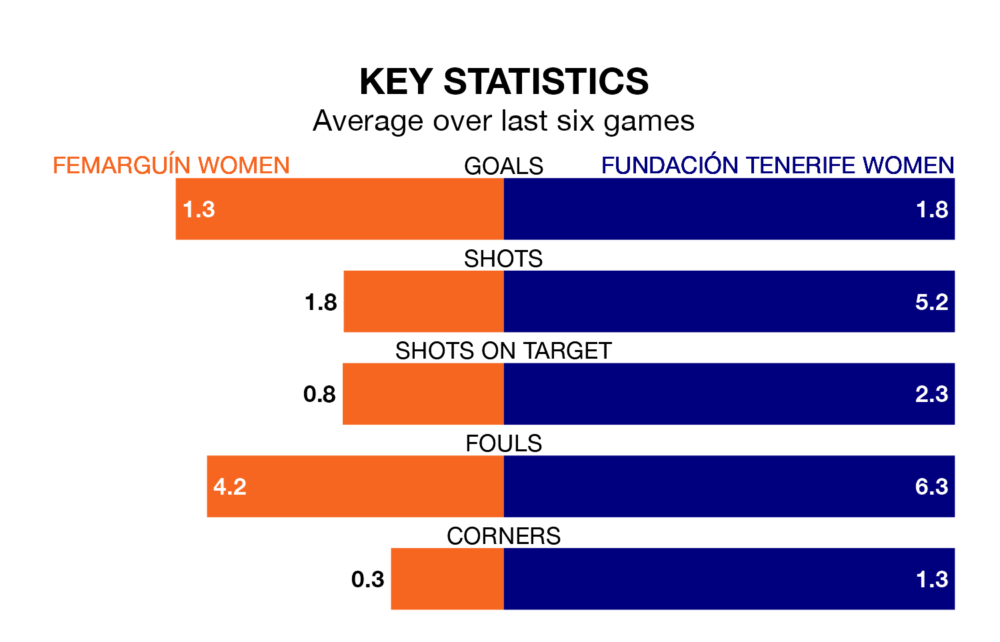

Fundación Tenerife Women come to play Femarguín Women on Sunday lunchtime in excellent form, having collected 16 points from their last six games.
The visitors have won five and drawn one of their last six fixtures, while Femarguín have three wins and a draw.
Femarguín are zero in the table after 18 games, of which they have won five and drawn four, earning 19 points.
Fundación Tenerife are seven places behind the home side in seventh, with 11 wins and two draws putting them on 35 points.
With 20 goals in 18 games so far this season, Femarguín are the league's joint--3th-lowest scorers with 1.1 goals per game. But they are conceding fewer than average too, letting in 22 goals at a rate of 1.2 per game.
The visitors, meanwhile, are above average scorers, with 1.4 goals per game, compared to a league average of 1.3. They have conceded 0.7 goals per game.
Femarguín's last match was on January 27, a 3-1 win against Elche Women, with getting the goals for Femarguín.
Fundación Tenerife beat Real Unión de Tenerife Women 1-0 last time out, also on January 27, with on the scoresheet.
Updated: 13:20 (UTC), 29/01/24